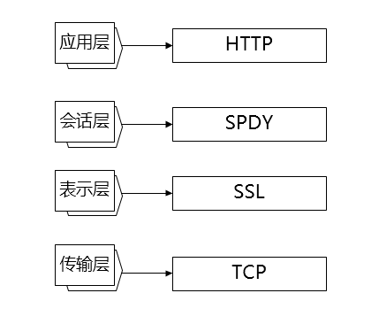

HTTP1.x VS HTTPS VS SPDY VS HTTP2.0
作为一个天天和浏览器打交道的物种，怎么好意思不懂HTTP。。。来。。我们看看。。^^
http1.x
http1.x 区别
http是应用层的协议，建立在TCP协议之上。http协议规定，请求从客户端发出，最后服务器端响应请求返回。http是无状态协议，即协议对于发送过得请求或响应都不做持久化处理。使用Http协议交互的信息被称为http报文。HTTP报文本身是由多行数据构成的字符串文本。HTTP报文大致分成报文首部与报文主体两块。两者由最初出现的空行（CR+LF）来划分。
http1.0 之前还有http0.9版本，现在多使用http1.1版本。在1.0与1.1版本之间还是存在一些区别，但是有些功能是在部分1.0 和1.1版本中都存在的如持久连接keep-alive。
主要区别如下：（转自HTTP1.0和HTTP1.1的一些区别）
缓存处理，在HTTP1.0中主要使用header里的If-Modified-Since,Expires来做为缓存判断的标准，HTTP1.1则引入了更多的缓存控制策略例如Entity tag，If-Unmodified-Since, If-Match, If-None-Match等更多可供选择的缓存头来控制缓存策略。带宽优化及网络连接的使用，HTTP1.0中，存在一些浪费带宽的现象，例如客户端只是需要某个对象的一部分，而服务器却将整个对象送过来了，并且不支持断点续传功能，HTTP1.1则在请求头引入了range头域，它允许只请求资源的某个部分，即返回码是206（Partial Content），这样就方便了开发者自由的选择以便于充分利用带宽和连接。错误通知的管理，在HTTP1.1中新增了24个错误状态响应码，如409（Conflict）表示请求的资源与资源的当前状态发生冲突；410（Gone）表示服务器上的某个资源被永久性的删除。Host头处理，在HTTP1.0中认为每台服务器都绑定一个唯一的IP地址，因此，请求消息中的URL并没有传递主机名（hostname）。但随着虚拟主机技术的发展，在一台物理服务器上可以存在多个虚拟主机（Multi-homed Web Servers），并且它们共享一个IP地址。HTTP1.1的请求消息和响应消息都应支持Host头域，且请求消息中如果没有Host头域会报告一个错误（400 Bad Request）。长连接，HTTP 1.1全部支持持久连接（PersistentConnection）和请求的管线化（Pipelining）处理，在一个TCP连接上可以传送多个HTTP请求和响应，减少了建立和关闭连接的消耗和延迟，在HTTP1.1中默认开启Connection： keep-alive。持久连接使得多数请求以管线化放肆发送成为可能。从前发送请求后需等待并收到响应，才能收到下一个请求。管线化技术后，不用等待响应亦可以直接发送下一个请求。
http1.x 缺点
http是很方便的，但是事物总是有两面性，它的方便是源于规则简单，这在最初的场景使用是很正常的，但是到了现在复杂的网络环境就会出现其他的问题。如：
- 通信使用明文，内容可能会被监听
- 不验证通信方身份，因此可能遭遇伪装 。对于服务器方即使是无意义的请求也会全收，无法阻止海量请求下的DOS(Denial of Service拒绝服务攻击)攻击。
- 无法证明报文的完整性，所以有可能已经遭到篡改。在请求或响应的传输途中，遭攻击者拦截并篡改内容的攻击称为中间人攻击(Man-in-the-Middle attack MITM)。
除了上面的危险之外，还有一些性能问题：
- http 的报文首部每次都要传送，增加了传输成本
- http keep-alive也带给了服务器端压力，并且对于单个文件被不断请求的服务，keep-alive可能会极大的影响性能，因为在文件被请求之后还保持了不必要的连接很长时间。
对于上面出现的问题，怎么能忍？！ 所以有了一些针对http 的优化。
http 优化
影响一个HTTP网络请求的因素主要有两个：带宽和延迟。 带宽在目前网速的情况下基本上不会成为瓶颈了。
对于延迟：
浏览器阻塞（HOL blocking）：浏览器会因为一些原因阻塞请求。浏览器对于同一个域名，同时只能有 4 个连接（这个根据浏览器内核不同可能会有所差异），超过浏览器最大连接数限制，后续请求就会被阻塞。DNS 查询（DNS Lookup）：可以通过DNS缓存来减少DNS查询时间。建立连接（Initial connection）：HTTP 是基于 TCP 协议的，浏览器最快也要在第三次握手时才能捎带 HTTP 请求报文，达到真正的建立连接，但是这些连接无法复用会导致每次请求都经历三次握手和慢启动。三次握手在高延迟的场景下影响较明显，慢启动则对文件类大请求影响较大。
上面的优化主要针对于性能的优化，除此之外对于安全性的改进就有了https协议。
https
https 就是 http+加密+认证+完整性保护。
对于http使用明文通信这一缺点，https使用加密手段来防止监听。加密包括通信线路加密和通信内容加密。
通信线路加密是使用SSL(安全套接层)或者TSL(安全层传输协议)建立安全通信线路，然后就可以在这条线路上进行http通信了。使用SSL时，是HTTP先和SSL通信，然后SSL再和TCP通信。SSL是独立于http的协议，所以不光是http协议，其他运行在应用层的SMTP和Telnet也可以配合SSL一起使用。
近代加密方法中加密算法是公开的，而密钥却是保密的。通过这种方式来保持密钥的安全性。
加密与解密同用一个密钥的方式称为共享密钥加密(Common key crypto system),也被称为对称密钥加密。以共享密钥方式加密时必须将密钥也发给对方。为了能够安全移交，使用了公开密钥加密的方式。
公开密钥加密使用一对非对称的密钥。一把叫做私有密钥，一把叫做公开密钥。公开密钥是可以随意发布的。 使用公开密钥加密方式，发送密文的一方使用对方的公开密钥进行加密处理，对方收到被加密信息之后，再使用自己的私有密钥进行解密。 另外，要想根据密文和公开密钥来恢复信息原文是异常困难的。
公开密钥加密和共享密钥加密相比，前者处理速度慢。所以https使用两者并用的混合加密机制。在交换密钥的环节使用公开密钥加密方式，之后的建立通信交换报文阶段则使用共享密钥加密。
看上去完美了？ 然而并没有。。。。
对于公开密钥加密方式，无法证明公开密钥本身就是货真价实的公开密钥。也许在公开密钥传输途中，真正的公开密钥就已经被攻击者给换掉了。对于这个问题，可以使用由数字认证机构（CA）和其由相关机关颁发的公开密钥证书。
使用证书的过程其实就是。。认证机构给本来服务器端要发送给客户端的公开密钥进行签名，然后服务端将这个签名后的公开密钥发送给客户端，客户端然后用认证机构的公开密钥向认证机构验证签名，若是通过，则证明之前收到的公开密钥是正确的，然后使用这个公开密钥与服务器端通信。那么。。。问题来了。。浏览器从哪里得到认证机构的公开密钥呢？会不会还会产生替换问题呢？那不就是鸡生蛋蛋生鸡了么?其实解决这个问题很简单。。。那就是多数浏览器开发商发布版本时，会事先在内部植入常用认证机关的公开密钥。
这就是https 了。。。完美了么？ 不。。。
https慢+https收费。。。你以为那些认证机构是免费的么。。。。
https 也存在一些问题，就是当使用SSL时，处理速度会变慢。SSL的慢分成两种。一种是通信慢。和使用http相比，网络负载可能会变慢2到100倍，除去和TCP连接，发送HTTP请求与响应之外，还必须进行SSL通信，因此整体上处理通信量不可避免会增加。另一种是指由于大量消耗CPU及内存资源，导致处理速度变慢。SSL必须进行加密处理，在服务器和客户端都需要进行加密与解密运算处理，因此从结果上来看，比起http会更多的消耗服务器和客户端的硬件资源，导致负载增强。
针对速度慢这一问题，可以使用SSL加速器（专用服务器）硬件方式来改善。
SPDY
针对http性能瓶颈，Google发布了SPDY，可缩短Web页面的加载时间(50%)。在SPDY之前，Ajax 和commet 技术也是对于http的改善，但是http协议本身的限制，必须进行协议上的改进，所以出现了SPDY。SPDY实际上属于会话层，因为安全问题，SPDY规定通信中使用表示层的SSL。 SPDY设计如下：

SPDY增加了如下功能：
多路复用流：通过单一的TCP连接，可以无限制处理多个HTTP请求，所有请求的处理都在一条TCP连接上完成，因此TCP的处理效率得到提高赋予请求优先级:SPDY 不仅可以无限制地并发处理请求，还可以给请求逐个分配优先级。压缩HTTP首部： 压缩HTTP请求和响应的首部。推送功能： 支持服务器主动向客户端推送数据的功能。这样，服务器可直接发送数据，而不必要等到客户端的请求。
http2.0
HTTP2.0可以说是SPDY的升级版。但是，HTTP2.0 跟 SPDY 仍有不同的地方，主要是以下两点：
- HTTP2.0 支持明文 HTTP 传输，而 SPDY 强制使用 HTTPS
HTTP2.0 消息头的压缩算法采用 HPACK，而非 SPDY 采用的 DEFLATE
HTTP2.0 也会有多路复用，服务器推送等功能。
参考文献
- 《图解HTTP》
- http,http2.0，SPDY，HTTPS你应该知道的一些事